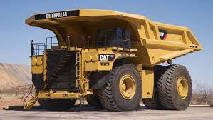
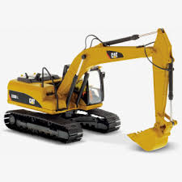
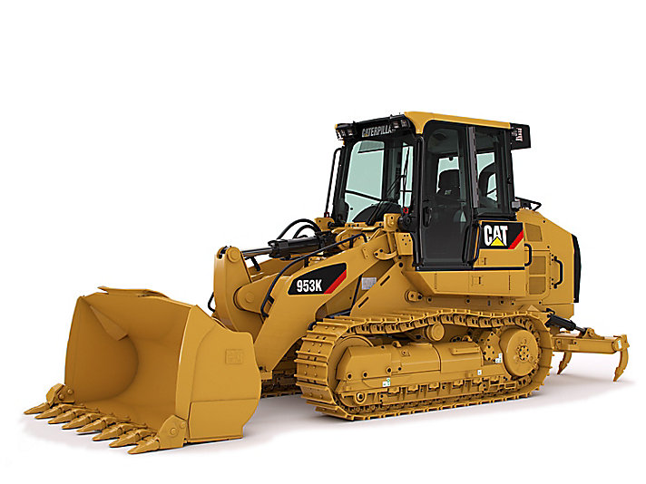
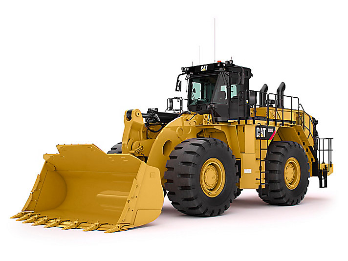
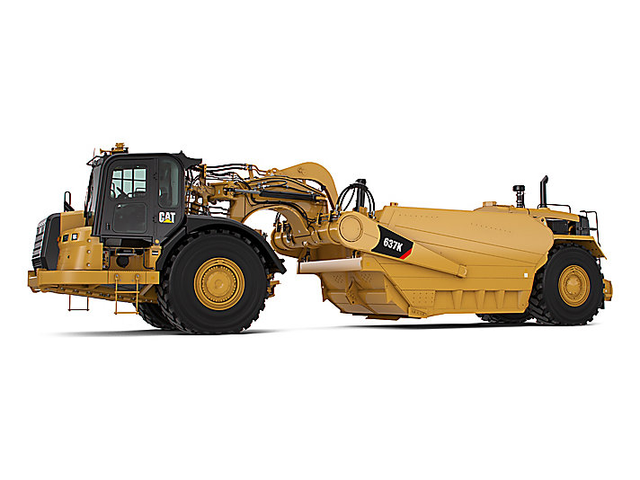
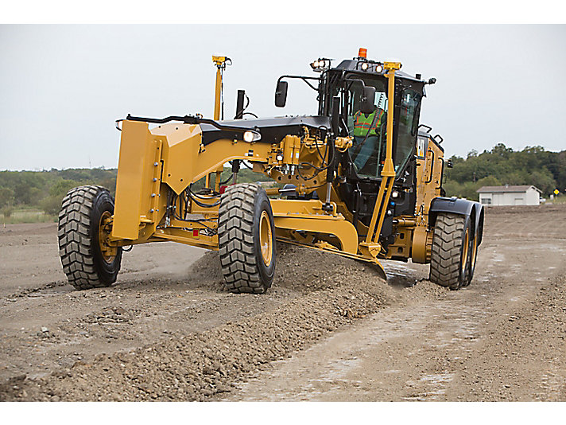

Máquinas que abastecemos
Selecciona los títulos en gris, estos te llevarán a un video de youtube.

Camiones de cargar
Durante más de 50 años, los resistentes camiones de obras y camiones mineros Cat® han funcionado en las difíciles condiciones de minas, proyectos de construcción y canteras en todo el mundo. Adaptados a nuestros cargadores de ruedas y excavadoras, puede confiar en nuestros camiones de acarreo para obtener una productividad máxima a un bajo costo por tonelada.

Excavadoras
No importa qué tipo de trabajo realice, ya sea excavación, apertura de zanjas o carga de camiones, las excavadoras Cat® ofrecen un rendimiento óptimo, una inigualable versatilidad y una excelente eficiencia del combustible. El funcionamiento simple, la sorprendente durabilidad y las más recientes características de seguridad y tecnología lo ayudarán a llevar a su empresa al siguiente nivel.

Cargadores de cadenas
Ahorre dinero y tiempo de transporte con una máquina resistente para desmonte de terrenos, excavaciones, nivelaciones, carga de camiones, trabajos en pendientes y más. Los trabajos exigentes, el terreno irregular y los espacios reducidos no son rivales para la versátil línea de cargadores de cadenas Cat®.

Cargadores de ruedas
Los cargadores de ruedas Cat® permiten que los trabajos de manipulación de materiales y de carga sean más seguros, rápidos, precisos y rentables. Los cargadores delanteros Cat fijan el estándar en cuanto a confiabilidad, productividad, eficiencia del combustible, versatilidad y comodidad del operador.

Raspadores de Carbón
Los tazones de carbón 637K son más largos y más altos que los tazones raspadores de tractores de ruedas estándar, lo que les permite transportar 38 m (50 yardas) de carbón suelto de baja densidad. Los tazones están diseñados y construidos para entregar específicamente el carbón suelto que llega a la pila de almacenamiento y el carbón apilado de reserva al sistema de alimentación.

Motoniveladora
La motoniveladora Cat® 120 de próxima generación ofrece las opciones de palanca de mando o volante y controles de palanca con la opción de tracción en las cuatro ruedas. Ahorre hasta un 15 por ciento en consumo de combustible. Las opciones de cabina y comodidad ayudan a mejorar el rendimiento. Las opciones de tecnología integradas de fábrica garantizan la calidad de cualquier proyecto.